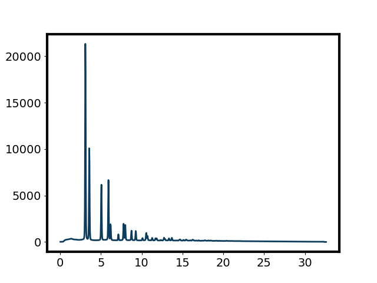

Note
Click here to download the full example code
XPD Analyzer¶
This analyzer processes the x-ray powder diffraction images and yields pair distribution function data. It is basically a wrapper of the core of the XPD server and thus its functionality is the same as the XPD server. The only difference is that the XPD server receives data from the messages sent by a proxy while the analyzer takes data from a database entry. If you would like to know what the analyzer does and what input and output look like, please see What does XPD Server do?.
The sections below show how to use the XPD analyzer in Ipython.
Create an analyzer¶
To create an XPDAnalyzer, you need to create a XPDAnalyzerConfig first.
The XPDAnalyzerConfig is an object that holds the configuration of the analyzer.
from pdfstream.analyzers.xpd_analyzer import XPDAnalyzerConfig, XPDAnalyzer
config = XPDAnalyzerConfig(allow_no_value=True)
The allow_no_value is an optional argument.
Please see the document of configparser for details of
the arguments.
It is the parent class of the XPDAnalyzerConfig.
Then, we will load the configuration parameters into the config.
We can use a .ini file, a python string or a python dictionary.
config.read("../source/_static/xpd_analyzer.ini")
Out:
['../source/_static/xpd_analyzer.ini']
Here, we use a .ini file as an example. The content of the file is shown below and the meaning of the parameters is described in the comments. Please read through it and change it according to your needs.
# the basic information of the configuration, users do not need to chang this section
[BASIC]
# the name of the analyzer configuration
name = xpd
# the version of the analyzer configuration
version = 1.0.0
# the control for whether the server will run certain functionality
# if a functionality is turned to False, all the settings related to the functionality will be inactive
[FUNCTIONALITY]
# whether to do the calibration if the server receives the data of standard powder
# if False, server will ignore the data of standard sample
do_calibration = False
# whether to dump the processed data and the data of independent variables in a data base
dump_to_db = True
# whether to export the processed data to files in the file system
export_files = False
# whether to visualize the processed data in figures
visualize_data = False
# the information about database used by the server
[DATABASE]
# the name of the database for raw diffraction image data in the databroker catalog
raw_db = example
# the name of the database to dump the processed data in the databroker catalog
# the 'temp' is a special name, a temporary directory will be created and it is not recorded in databroker catalog
an_db = temp
# the folders where the server will dump the files to
[FILE SYSTEM]
# the folder where all the processed data will be saved
tiff_base = ~/acqsim/xpdUser/tiff_base
# the folder where the calibration data will be saved
# please use the same value as the 'config_base' in 'glbl' of xpdacq
calib_base = ~/acqsim/xpdUser/config_base
# the keys for the metadata in the start document
# the analyzer will obtain the metadata according to the keys
# users usually do not need to change this
[METADATA]
# the identifier if a run is a dark frame image run
dk_identifier = dark_frame
# the identifier if a run is a calibration run
calib_identifier = is_calibration
# the key to run id of the dark frame run
dk_id_key = sc_dk_field_uid
# the key to the calibration data
calibration_md_key = calibration_md
# the key to the sample composition
composition_key = sample_composition
# the key to the wavelength of the beam
wavelength_key = bt_wavelength
# the key to the name of the background sample
bkgd_sample_name_key = bkgd_sample_name
# the key to the name of the sample
sample_name_key = sample_name
# the key to the type of the detector
detector_key = detector
# the key to the name of the standard powder sample
calibrant_key = sample_name
# the configuration about calibration
[CALIBRATION]
# the name of the .poni file for calibration data
# please use the same value as the 'calib_config_name' in 'glbl' of xdpacq
poni_file = xpdAcq_calib_info.poni
# the default composition of standard powder if it is not specified
default_calibrant = Ni
# the settings for the auto-masking
[MASK SETTING]
# the parameter of how strict the criterion is for the masking
# the pixels with intensity out of the range (median - alpha * std, median + alpha * std) will be masked
# mean is the average intensity of all pixels in a bin and std is the standard deviation in that bin
alpha = 2.0
# how many pixels at each edge of the figure will be masked
# for example, if edge = 20, the unmasked region of a 2048 * 2048 pixel images will be a 2008 * 2008 pixels
# in the center
edge = 20
# the lower threshold, any pixels whose intensity is below the lower threshold will be masked
lower_thresh = 0.
# the upper threshold, any pixels whose intensity is above the upper threshold will be masked
# upper_thresh =
# the settings for azimuthal integration
[INTEGRATION SETTING]
# the number of points in the XRD data
npt = 1024
# whether to do the solid angle correction
correctSolidAngle = False
# the polarization correction factor, 0.99 is the usual value for synchrotron
polarization_factor = 0.99
# the algorithm for the binning, see pyFAI(https://pyfai.readthedocs.io/en/master/index.html) for details
method = splitpixel
# the normalization factor for the diffraction image
normalization_factor = 1.0
# the settings for the transformation from XRD data to PDF data
[TRANSFORMATION SETTING]
# the high limit for the range of r used in data correction, unit: angstrom
# the assumption is that the oscillation of PDF in range 0 <= r <= rpoly is all noise and should be removed
rpoly = 1.0
# the high limit (included) of the range of Q the polynomial fitting, unit: inverse angstrom
# the assumption is that the XRD in Q <= qmaxinst are valid data without obvious discontinuity
qmaxinst = 24.0
# the low limit (included) of the range of the Fourier transformation of the F(Q), unit: inverse angstrom
qmin = 0.0
# the high limit (included) of the range of the Fourier transformation of the F(Q), unit: inverse angstrom
qmax = 22.0
# the settings for the r-grid of PDF data
# for example, this settings below will give a r-grid [0.00, 0.01, 0.02, 0.03, ...., 29.99, 30.00]
[PDF SETTING]
# the low limit (included) of r, unit: inverse angstrom
rmin = 0.0
# the high limit (included) of r, unit: inverse angstrom
rmax = 30.0
# the interval between two data points on r-grid, unit: inverse angstrom
rstep = 0.01
# the settings to export images in tiff files
[TIFF SETTING]
# whether to export the data or not
enable = True
# the prefix of the file name
file_prefix = {start[original_run_uid]}_{start[sample_name]}_
# the settings to export the metadata in json files
[JSON SETTING]
# whether to export the data or not
enable = True
# the prefix of the file name
file_prefix = {start[original_run_uid]}_{start[sample_name]}_
# the settings to export the scalar data in csv files
[CSV SETTING]
# whether to export the data or not
enable = True
# the prefix of the file name
file_prefix = {start[original_run_uid]}_{start[sample_name]}_
# the settings to export the reduced data (like XRD and PDF) in csv files
[NPY SETTING]
# whether to export the data or not
enable = True
# the prefix of the file name
file_prefix = {start[original_run_uid]}_{start[sample_name]}_
# the settings to visualize the masked image (already dark subtracted and background subtracted)
[VIS MASKED IMAGE]
# whether to visualize the data or not
enable = True
# the color map of the image
cmap = viridis
# the settings to visualize the background subtracted image (already dark subtracted)
[VIS BG SUB IMAGE]
# whether to visualize the data or not
enable = False
# the color map of the image
cmap = viridis
# the settings to visualize the dark subtracted image
[VIS DK SUB IMAGE]
# whether to visualize the data or not
enable = False
# the color map of the image
cmap = viridis
# the settings to visualize the intensity as a function of momentum transfer (XRD data)
[VIS CHI]
# whether to visualize the data or not
enable = True
# the x and y axis labels, if not specified, use the default labels
# uncomment the line below to activate
# xlabel =
# ylabel =
# the settings to visualize the interpolated XRD data
[VIS IQ]
# whether to visualize the data or not
enable = False
# the x and y axis labels, if not specified, use the default labels
# uncomment the line below to activate
# xlabel =
# ylabel =
# the settings to visualize the structure factor as a function of momentum transfer
[VIS SQ]
# whether to visualize the data or not
enable = False
# the x and y axis labels, if not specified, use the default labels
# uncomment the line below to activate
# xlabel =
# ylabel =
# the settings to visualize the reduced structure factor as a function of momentum transfer
[VIS FQ]
# whether to visualize the data or not
enable = True
# the x and y axis labels, if not specified, use the default labels
# uncomment the line below to activate
# xlabel =
# ylabel =
# the settings to visualize the reduced pair distribution function (PDF data)
[VIS GR]
# whether to visualize the data or not
enable = True
# the x and y axis labels, if not specified, use the default labels
# uncomment the line below to activate
# xlabel =
# ylabel =
# the settings to visualize the maximum value of PDF
[VIS GR MAX]
# whether to visualize the data or not
enable = True
# the y axis labels, if not specified, use the default label
# uncomment the line below to activate
# ylabel =
# the settings to visualize the r value at the maximum point of PDF
[VIS GR ARGMAX]
# whether to visualize the data or not
enable = True
# the y axis labels, if not specified, use the default label
# uncomment the line below to activate
# ylabel =
# the settings to visualize the maximum value of XRD
[VIS CHI MAX]
# whether to visualize the data or not
enable = True
# the y axis labels, if not specified, use the default label
# uncomment the line below to activate
# ylabel =
# the settings to visualize the Q value at he maximum point of XRD
[VIS CHI ARGMAX]
# whether to visualize the data or not
enable = True
# the y axis labels, if not specified, use the default label
# uncomment the line below to activate
# ylabel =
Now, we have a config loaded with parameters.
We use it to create an analyzer.
analyzer = XPDAnalyzer(config)
Out:
Warning: a temporary db is created for an db. It will be destroy at the end of the session.
Get data from databroker¶
The input data of the analyzer is a BlueskyRun, the data entry retrieved by from a databroker catalog.
Below is an example showing the process of retrieving one run from a catalog according to its unique ID.
db = config.raw_db
run = db['9d320500-b3c8-47a2-8554-ca63fa092c17']
Here, db is a databroker catalog loaded according to your configuration.
Please visit databroker user documents for details
about what you can do with the db and run.
The data inside this run is show below.
raw_data = run.primary.read()
raw_data
<xarray.Dataset>
Dimensions: (dim_0: 1, dim_1: 2048, dim_10: 2, dim_2: 2048, dim_3: 17, dim_4: 3, dim_5: 40, dim_6: 2, dim_7: 19, dim_8: 3, dim_9: 14, time: 1)
Coordinates:
* time (time) float64 1.582e+09
Dimensions without coordinates: dim_0, dim_1, dim_10, dim_2, dim_3, dim_4, dim_5, dim_6, dim_7, dim_8, dim_9
Data variables:
pe1_image (time, dim_0, dim_1, dim_2) uint16 0...
pe1_stats1_total (time) float64 4.41e+08
pe1:pe1_cam_acquire_period (time) float64 0.1
pe1:pe1_cam_acquire_time (time) float64 0.2
pe1:pe1_cam_bin_x (time) int64 1
pe1:pe1_cam_bin_y (time) int64 1
pe1:pe1_cam_image_mode (time) int64 2
pe1:pe1_cam_manufacturer (time) <U12 'Perkin Elmer'
pe1:pe1_cam_model (time) <U23 'XRD [0820/1620/1621] xN'
pe1:pe1_cam_num_exposures (time) int64 1
pe1:pe1_cam_trigger_mode (time) int64 0
pe1:pe1_tiff_configuration_names (time, dim_3) <U29 'pe1_tiff_configu...
pe1:pe1_tiff_port_name (time) <U9 'FileTIFF1'
pe1:pe1_tiff_asyn_pipeline_config (time, dim_4) <U28 'pe1_cam_configur...
pe1:pe1_tiff_blocking_callbacks (time) <U3 'Yes'
pe1:pe1_tiff_enable (time) <U6 'Enable'
pe1:pe1_tiff_nd_array_port (time) <U5 'PROC1'
pe1:pe1_tiff_plugin_type (time) <U10 'NDFileTIFF'
pe1:pe1_tiff_auto_increment (time) int64 1
pe1:pe1_tiff_auto_save (time) int64 0
pe1:pe1_tiff_file_format (time) int64 0
pe1:pe1_tiff_file_name (time) <U23 '92b6b929-d904-42f4-9017'
pe1:pe1_tiff_file_path (time) <U23 'G:\\pe1_data\\2020\\02\...
pe1:pe1_tiff_file_path_exists (time) int64 1
pe1:pe1_tiff_file_template (time) <U15 '%s%s_%6.6d.tiff'
pe1:pe1_tiff_file_write_mode (time) int64 1
pe1:pe1_tiff_full_file_name (time) <U58 'G:\\pe1_data\\2020\\02\...
pe1:pe1_tiff_num_capture (time) int64 1
pe1:pe1_proc_configuration_names (time, dim_5) <U29 'pe1_proc_configu...
pe1:pe1_proc_port_name (time) <U5 'PROC1'
pe1:pe1_proc_asyn_pipeline_config (time, dim_6) <U28 'pe1_cam_configur...
pe1:pe1_proc_blocking_callbacks (time) <U3 'Yes'
pe1:pe1_proc_data_type (time) <U6 'UInt16'
pe1:pe1_proc_enable (time) <U6 'Enable'
pe1:pe1_proc_nd_array_port (time) <U6 'PEDET1'
pe1:pe1_proc_plugin_type (time) <U15 'NDPluginProcess'
pe1:pe1_proc_auto_offset_scale (time) <U4 'Done'
pe1:pe1_proc_auto_reset_filter (time) <U3 'Yes'
pe1:pe1_proc_copy_to_filter_seq (time) int64 0
pe1:pe1_proc_data_type_out (time) <U9 'Automatic'
pe1:pe1_proc_difference_seq (time) int64 0
pe1:pe1_proc_enable_background (time) <U7 'Disable'
pe1:pe1_proc_enable_filter (time) <U6 'Enable'
pe1:pe1_proc_enable_flat_field (time) <U7 'Disable'
pe1:pe1_proc_enable_high_clip (time) <U7 'Disable'
pe1:pe1_proc_enable_low_clip (time) <U7 'Disable'
pe1:pe1_proc_enable_offset_scale (time) <U7 'Disable'
pe1:pe1_proc_foffset (time) float64 0.0
pe1:pe1_proc_fscale (time) float64 1.0
pe1:pe1_proc_filter_callbacks (time) <U12 'Array N only'
pe1:pe1_proc_filter_type (time) <U7 'Average'
pe1:pe1_proc_filter_type_seq (time) int64 0
pe1:pe1_proc_high_clip (time) float64 100.0
pe1:pe1_proc_low_clip (time) float64 0.0
pe1:pe1_proc_num_filter (time) int64 50
pe1:pe1_proc_num_filter_recip (time) float64 0.02
pe1:pe1_proc_num_filtered (time) int64 2
pe1:pe1_proc_o_offset (time) float64 0.0
pe1:pe1_proc_o_scale (time) float64 1.0
pe1:pe1_proc_offset (time) float64 0.0
pe1:pe1_proc_roffset (time) float64 0.0
pe1:pe1_proc_scale (time) float64 1.0
pe1:pe1_proc_scale_flat_field (time) float64 255.0
pe1:pe1_proc_valid_background (time) <U7 'Invalid'
pe1:pe1_proc_valid_flat_field (time) <U7 'Invalid'
pe1:pe1_images_per_set (time) float64 50.0
pe1:pe1_number_of_sets (time) int64 1
pe1:pe1_pixel_size (time) float64 0.0002
pe1:pe1_detector_type (time) <U6 'Perkin'
pe1:pe1_stats1_configuration_names (time, dim_7) <U31 'pe1_stats1_confi...
pe1:pe1_stats1_port_name (time) <U6 'STATS1'
pe1:pe1_stats1_asyn_pipeline_config (time, dim_8) <U30 'pe1_cam_configur...
pe1:pe1_stats1_blocking_callbacks (time) <U3 'Yes'
pe1:pe1_stats1_enable (time) <U6 'Enable'
pe1:pe1_stats1_nd_array_port (time) <U4 'ROI1'
pe1:pe1_stats1_plugin_type (time) <U13 'NDPluginStats'
pe1:pe1_stats1_bgd_width (time) int64 1
pe1:pe1_stats1_centroid_threshold (time) float64 1.0
pe1:pe1_stats1_compute_centroid (time) <U2 'No'
pe1:pe1_stats1_compute_histogram (time) <U2 'No'
pe1:pe1_stats1_compute_profiles (time) <U2 'No'
pe1:pe1_stats1_compute_statistics (time) <U3 'Yes'
pe1:pe1_stats1_hist_max (time) float64 255.0
pe1:pe1_stats1_hist_min (time) float64 0.0
pe1:pe1_stats1_hist_size (time) int64 256
pe1:pe1_stats1_ts_num_points (time) int64 2048
pe1:pe1_roi1_configuration_names (time, dim_9) <U29 'pe1_roi1_configu...
pe1:pe1_roi1_port_name (time) <U4 'ROI1'
pe1:pe1_roi1_asyn_pipeline_config (time, dim_10) <U28 'pe1_cam_configu...
pe1:pe1_roi1_blocking_callbacks (time) <U3 'Yes'
pe1:pe1_roi1_enable (time) <U6 'Enable'
pe1:pe1_roi1_nd_array_port (time) <U6 'PEDET1'
pe1:pe1_roi1_plugin_type (time) <U11 'NDPluginROI'
pe1:pe1_roi1_data_type_out (time) <U9 'Automatic'
pe1:pe1_roi1_enable_scale (time) <U7 'Disable'
pe1:pe1_roi1_name_ (time) <U1 ''
seq_num (time) int64 1
uid (time) <U36 'ad3b7a7f-6564-4157-933f...- dim_0: 1
- dim_1: 2048
- dim_10: 2
- dim_2: 2048
- dim_3: 17
- dim_4: 3
- dim_5: 40
- dim_6: 2
- dim_7: 19
- dim_8: 3
- dim_9: 14
- time: 1
- time(time)float641.582e+09
array([1.581814e+09])
- pe1_image(time, dim_0, dim_1, dim_2)uint160 0 0 0 0 0 0 0 ... 0 0 0 0 0 0 0 0
array([[[[ 0, 0, 0, ..., 0, 0, 0], [4594, 4576, 4587, ..., 4123, 4172, 4122], [4635, 4600, 4624, ..., 4318, 4231, 4216], ..., [4335, 4315, 4312, ..., 4540, 4511, 4529], [4229, 4257, 4251, ..., 4458, 4474, 4525], [ 0, 0, 0, ..., 0, 0, 0]]]], dtype=uint16) - pe1_stats1_total(time)float644.41e+08
array([4.41031435e+08])
- pe1:pe1_cam_acquire_period(time)float640.1
array([0.1])
- pe1:pe1_cam_acquire_time(time)float640.2
array([0.2])
- pe1:pe1_cam_bin_x(time)int641
array([1])
- pe1:pe1_cam_bin_y(time)int641
array([1])
- pe1:pe1_cam_image_mode(time)int642
array([2])
- pe1:pe1_cam_manufacturer(time)<U12'Perkin Elmer'
array(['Perkin Elmer'], dtype='<U12')
- pe1:pe1_cam_model(time)<U23'XRD [0820/1620/1621] xN'
array(['XRD [0820/1620/1621] xN'], dtype='<U23')
- pe1:pe1_cam_num_exposures(time)int641
array([1])
- pe1:pe1_cam_trigger_mode(time)int640
array([0])
- pe1:pe1_tiff_configuration_names(time, dim_3)<U29'pe1_tiff_configuration_names' ....
array([['pe1_tiff_configuration_names', 'pe1_tiff_port_name', 'pe1_tiff_asyn_pipeline_config', 'pe1_tiff_blocking_callbacks', 'pe1_tiff_enable', 'pe1_tiff_nd_array_port', 'pe1_tiff_plugin_type', 'pe1_tiff_auto_increment', 'pe1_tiff_auto_save', 'pe1_tiff_file_format', 'pe1_tiff_file_name', 'pe1_tiff_file_path', 'pe1_tiff_file_path_exists', 'pe1_tiff_file_template', 'pe1_tiff_file_write_mode', 'pe1_tiff_full_file_name', 'pe1_tiff_num_capture']], dtype='<U29') - pe1:pe1_tiff_port_name(time)<U9'FileTIFF1'
array(['FileTIFF1'], dtype='<U9')
- pe1:pe1_tiff_asyn_pipeline_config(time, dim_4)<U28'pe1_cam_configuration_names' .....
array([['pe1_cam_configuration_names', 'pe1_proc_configuration_names', 'pe1_tiff_configuration_names']], dtype='<U28') - pe1:pe1_tiff_blocking_callbacks(time)<U3'Yes'
array(['Yes'], dtype='<U3')
- pe1:pe1_tiff_enable(time)<U6'Enable'
array(['Enable'], dtype='<U6')
- pe1:pe1_tiff_nd_array_port(time)<U5'PROC1'
array(['PROC1'], dtype='<U5')
- pe1:pe1_tiff_plugin_type(time)<U10'NDFileTIFF'
array(['NDFileTIFF'], dtype='<U10')
- pe1:pe1_tiff_auto_increment(time)int641
array([1])
- pe1:pe1_tiff_auto_save(time)int640
array([0])
- pe1:pe1_tiff_file_format(time)int640
array([0])
- pe1:pe1_tiff_file_name(time)<U23'92b6b929-d904-42f4-9017'
array(['92b6b929-d904-42f4-9017'], dtype='<U23')
- pe1:pe1_tiff_file_path(time)<U23'G:\\pe1_data\\2020\\02\\15\\'
array(['G:\\pe1_data\\2020\\02\\15\\'], dtype='<U23')
- pe1:pe1_tiff_file_path_exists(time)int641
array([1])
- pe1:pe1_tiff_file_template(time)<U15'%s%s_%6.6d.tiff'
array(['%s%s_%6.6d.tiff'], dtype='<U15')
- pe1:pe1_tiff_file_write_mode(time)int641
array([1])
- pe1:pe1_tiff_full_file_name(time)<U58'G:\\pe1_data\\2020\\02\\15\\92b...
array(['G:\\pe1_data\\2020\\02\\15\\92b6b929-d904-42f4-9017_000000.tiff'], dtype='<U58') - pe1:pe1_tiff_num_capture(time)int641
array([1])
- pe1:pe1_proc_configuration_names(time, dim_5)<U29'pe1_proc_configuration_names' ....
array([['pe1_proc_configuration_names', 'pe1_proc_port_name', 'pe1_proc_asyn_pipeline_config', 'pe1_proc_blocking_callbacks', 'pe1_proc_data_type', 'pe1_proc_enable', 'pe1_proc_nd_array_port', 'pe1_proc_plugin_type', 'pe1_proc_auto_offset_scale', 'pe1_proc_auto_reset_filter', 'pe1_proc_copy_to_filter_seq', 'pe1_proc_data_type_out', 'pe1_proc_difference_seq', 'pe1_proc_enable_background', 'pe1_proc_enable_filter', 'pe1_proc_enable_flat_field', 'pe1_proc_enable_high_clip', 'pe1_proc_enable_low_clip', 'pe1_proc_enable_offset_scale', 'pe1_proc_fc', 'pe1_proc_foffset', 'pe1_proc_fscale', 'pe1_proc_filter_callbacks', 'pe1_proc_filter_type', 'pe1_proc_filter_type_seq', 'pe1_proc_high_clip', 'pe1_proc_low_clip', 'pe1_proc_num_filter', 'pe1_proc_num_filter_recip', 'pe1_proc_num_filtered', 'pe1_proc_oc', 'pe1_proc_o_offset', 'pe1_proc_o_scale', 'pe1_proc_offset', 'pe1_proc_rc', 'pe1_proc_roffset', 'pe1_proc_scale', 'pe1_proc_scale_flat_field', 'pe1_proc_valid_background', 'pe1_proc_valid_flat_field']], dtype='<U29') - pe1:pe1_proc_port_name(time)<U5'PROC1'
array(['PROC1'], dtype='<U5')
- pe1:pe1_proc_asyn_pipeline_config(time, dim_6)<U28'pe1_cam_configuration_names' 'p...
array([['pe1_cam_configuration_names', 'pe1_proc_configuration_names']], dtype='<U28') - pe1:pe1_proc_blocking_callbacks(time)<U3'Yes'
array(['Yes'], dtype='<U3')
- pe1:pe1_proc_data_type(time)<U6'UInt16'
array(['UInt16'], dtype='<U6')
- pe1:pe1_proc_enable(time)<U6'Enable'
array(['Enable'], dtype='<U6')
- pe1:pe1_proc_nd_array_port(time)<U6'PEDET1'
array(['PEDET1'], dtype='<U6')
- pe1:pe1_proc_plugin_type(time)<U15'NDPluginProcess'
array(['NDPluginProcess'], dtype='<U15')
- pe1:pe1_proc_auto_offset_scale(time)<U4'Done'
array(['Done'], dtype='<U4')
- pe1:pe1_proc_auto_reset_filter(time)<U3'Yes'
array(['Yes'], dtype='<U3')
- pe1:pe1_proc_copy_to_filter_seq(time)int640
array([0])
- pe1:pe1_proc_data_type_out(time)<U9'Automatic'
array(['Automatic'], dtype='<U9')
- pe1:pe1_proc_difference_seq(time)int640
array([0])
- pe1:pe1_proc_enable_background(time)<U7'Disable'
array(['Disable'], dtype='<U7')
- pe1:pe1_proc_enable_filter(time)<U6'Enable'
array(['Enable'], dtype='<U6')
- pe1:pe1_proc_enable_flat_field(time)<U7'Disable'
array(['Disable'], dtype='<U7')
- pe1:pe1_proc_enable_high_clip(time)<U7'Disable'
array(['Disable'], dtype='<U7')
- pe1:pe1_proc_enable_low_clip(time)<U7'Disable'
array(['Disable'], dtype='<U7')
- pe1:pe1_proc_enable_offset_scale(time)<U7'Disable'
array(['Disable'], dtype='<U7')
- pe1:pe1_proc_foffset(time)float640.0
array([0.])
- pe1:pe1_proc_fscale(time)float641.0
array([1.])
- pe1:pe1_proc_filter_callbacks(time)<U12'Array N only'
array(['Array N only'], dtype='<U12')
- pe1:pe1_proc_filter_type(time)<U7'Average'
array(['Average'], dtype='<U7')
- pe1:pe1_proc_filter_type_seq(time)int640
array([0])
- pe1:pe1_proc_high_clip(time)float64100.0
array([100.])
- pe1:pe1_proc_low_clip(time)float640.0
array([0.])
- pe1:pe1_proc_num_filter(time)int6450
array([50])
- pe1:pe1_proc_num_filter_recip(time)float640.02
array([0.02])
- pe1:pe1_proc_num_filtered(time)int642
array([2])
- pe1:pe1_proc_o_offset(time)float640.0
array([0.])
- pe1:pe1_proc_o_scale(time)float641.0
array([1.])
- pe1:pe1_proc_offset(time)float640.0
array([0.])
- pe1:pe1_proc_roffset(time)float640.0
array([0.])
- pe1:pe1_proc_scale(time)float641.0
array([1.])
- pe1:pe1_proc_scale_flat_field(time)float64255.0
array([255.])
- pe1:pe1_proc_valid_background(time)<U7'Invalid'
array(['Invalid'], dtype='<U7')
- pe1:pe1_proc_valid_flat_field(time)<U7'Invalid'
array(['Invalid'], dtype='<U7')
- pe1:pe1_images_per_set(time)float6450.0
array([50.])
- pe1:pe1_number_of_sets(time)int641
array([1])
- pe1:pe1_pixel_size(time)float640.0002
array([0.0002])
- pe1:pe1_detector_type(time)<U6'Perkin'
array(['Perkin'], dtype='<U6')
- pe1:pe1_stats1_configuration_names(time, dim_7)<U31'pe1_stats1_configuration_names'...
array([['pe1_stats1_configuration_names', 'pe1_stats1_port_name', 'pe1_stats1_asyn_pipeline_config', 'pe1_stats1_blocking_callbacks', 'pe1_stats1_enable', 'pe1_stats1_nd_array_port', 'pe1_stats1_plugin_type', 'pe1_stats1_bgd_width', 'pe1_stats1_centroid_threshold', 'pe1_stats1_compute_centroid', 'pe1_stats1_compute_histogram', 'pe1_stats1_compute_profiles', 'pe1_stats1_compute_statistics', 'pe1_stats1_hist_max', 'pe1_stats1_hist_min', 'pe1_stats1_hist_size', 'pe1_stats1_profile_cursor', 'pe1_stats1_profile_size', 'pe1_stats1_ts_num_points']], dtype='<U31') - pe1:pe1_stats1_port_name(time)<U6'STATS1'
array(['STATS1'], dtype='<U6')
- pe1:pe1_stats1_asyn_pipeline_config(time, dim_8)<U30'pe1_cam_configuration_names' .....
array([['pe1_cam_configuration_names', 'pe1_roi1_configuration_names', 'pe1_stats1_configuration_names']], dtype='<U30') - pe1:pe1_stats1_blocking_callbacks(time)<U3'Yes'
array(['Yes'], dtype='<U3')
- pe1:pe1_stats1_enable(time)<U6'Enable'
array(['Enable'], dtype='<U6')
- pe1:pe1_stats1_nd_array_port(time)<U4'ROI1'
array(['ROI1'], dtype='<U4')
- pe1:pe1_stats1_plugin_type(time)<U13'NDPluginStats'
array(['NDPluginStats'], dtype='<U13')
- pe1:pe1_stats1_bgd_width(time)int641
array([1])
- pe1:pe1_stats1_centroid_threshold(time)float641.0
array([1.])
- pe1:pe1_stats1_compute_centroid(time)<U2'No'
array(['No'], dtype='<U2')
- pe1:pe1_stats1_compute_histogram(time)<U2'No'
array(['No'], dtype='<U2')
- pe1:pe1_stats1_compute_profiles(time)<U2'No'
array(['No'], dtype='<U2')
- pe1:pe1_stats1_compute_statistics(time)<U3'Yes'
array(['Yes'], dtype='<U3')
- pe1:pe1_stats1_hist_max(time)float64255.0
array([255.])
- pe1:pe1_stats1_hist_min(time)float640.0
array([0.])
- pe1:pe1_stats1_hist_size(time)int64256
array([256])
- pe1:pe1_stats1_ts_num_points(time)int642048
array([2048])
- pe1:pe1_roi1_configuration_names(time, dim_9)<U29'pe1_roi1_configuration_names' ....
array([['pe1_roi1_configuration_names', 'pe1_roi1_port_name', 'pe1_roi1_asyn_pipeline_config', 'pe1_roi1_blocking_callbacks', 'pe1_roi1_enable', 'pe1_roi1_nd_array_port', 'pe1_roi1_plugin_type', 'pe1_roi1_bin_', 'pe1_roi1_data_type_out', 'pe1_roi1_enable_scale', 'pe1_roi1_roi_enable', 'pe1_roi1_min_xyz', 'pe1_roi1_name_', 'pe1_roi1_size']], dtype='<U29') - pe1:pe1_roi1_port_name(time)<U4'ROI1'
array(['ROI1'], dtype='<U4')
- pe1:pe1_roi1_asyn_pipeline_config(time, dim_10)<U28'pe1_cam_configuration_names' 'p...
array([['pe1_cam_configuration_names', 'pe1_roi1_configuration_names']], dtype='<U28') - pe1:pe1_roi1_blocking_callbacks(time)<U3'Yes'
array(['Yes'], dtype='<U3')
- pe1:pe1_roi1_enable(time)<U6'Enable'
array(['Enable'], dtype='<U6')
- pe1:pe1_roi1_nd_array_port(time)<U6'PEDET1'
array(['PEDET1'], dtype='<U6')
- pe1:pe1_roi1_plugin_type(time)<U11'NDPluginROI'
array(['NDPluginROI'], dtype='<U11')
- pe1:pe1_roi1_data_type_out(time)<U9'Automatic'
array(['Automatic'], dtype='<U9')
- pe1:pe1_roi1_enable_scale(time)<U7'Disable'
array(['Disable'], dtype='<U7')
- pe1:pe1_roi1_name_(time)<U1''
array([''], dtype='<U1')
- seq_num(time)int641
array([1])
- uid(time)<U36'ad3b7a7f-6564-4157-933f-c3bae9e...
array(['ad3b7a7f-6564-4157-933f-c3bae9e9e876'], dtype='<U36')
The data is processed by the analyzer is the diffraction image.
import matplotlib.pyplot as plt
image = raw_data["pe1_image"]
image.plot(vmin=0, vmax=image.mean() + 2. * image.std())
plt.show()
In both ways, we need to use string values even if the qmax is actually a number.
After we run either line of the code above, the analyzer will use qmax = 20 in the data processing.
Get processed data from databroker¶
The data is dumped into databroker an_db by the analyzer.
We retrieve the last run in the database and it should be the processed data from our analyzer.
an_db = config.an_db
an_run = an_db[-1]
Here, we show the processed data in an xarray.
an_data = an_run.primary.read()
an_data
<xarray.Dataset>
Dimensions: (dim_0: 2048, dim_1: 2048, dim_10: 692, dim_11: 692, dim_12: 692, dim_13: 692, dim_14: 3001, dim_15: 3001, dim_2: 2048, dim_3: 2048, dim_4: 2048, dim_5: 2048, dim_6: 1024, dim_7: 1024, dim_8: 755, dim_9: 755, time: 1)
Coordinates:
* time (time) float64 1.607e+09
Dimensions without coordinates: dim_0, dim_1, dim_10, dim_11, dim_12, dim_13, dim_14, dim_15, dim_2, dim_3, dim_4, dim_5, dim_6, dim_7, dim_8, dim_9
Data variables:
dk_sub_image (time, dim_0, dim_1) uint16 0 0 0 0 0 0 0 0 ... 0 0 0 0 0 0 0
bg_sub_image (time, dim_2, dim_3) uint16 0 0 0 0 0 0 0 0 ... 0 0 0 0 0 0 0
mask (time, dim_4, dim_5) int64 1 1 1 1 1 1 1 1 ... 1 1 1 1 1 1 1 1
chi_Q (time, dim_6) float64 0.0253 0.05714 0.08897 ... 32.56 32.59
chi_I (time, dim_7) float32 17.449076 15.25509 17.243057 ... 0.0 0.0
chi_max (time) float32 21331.768
chi_argmax (time) float64 3.081
iq_Q (time, dim_8) float64 0.0 0.03183 0.06366 ... 23.94 23.97 24.0
iq_I (time, dim_9) float64 17.45 17.0 15.66 ... 74.84 74.1 73.68
sq_Q (time, dim_10) float64 0.0 0.03183 0.06366 ... 21.96 21.99
sq_S (time, dim_11) float64 1.441 1.42 1.399 ... 1.019 1.014 0.9995
fq_Q (time, dim_12) float64 0.0 0.03183 0.06366 ... 21.96 21.99
fq_F (time, dim_13) float64 0.0 0.01336 0.0254 ... 0.3035 -0.01125
gr_r (time, dim_14) float64 0.0 0.01 0.02 0.03 ... 29.98 29.99 30.0
gr_G (time, dim_15) float64 0.0 0.003567 0.006975 ... 1.4 1.455
gr_max (time) float64 7.417
gr_argmax (time) float64 6.59
seq_num (time) int64 1
uid (time) <U36 '33ba4957-be07-4530-a887-408858f27090'- dim_0: 2048
- dim_1: 2048
- dim_10: 692
- dim_11: 692
- dim_12: 692
- dim_13: 692
- dim_14: 3001
- dim_15: 3001
- dim_2: 2048
- dim_3: 2048
- dim_4: 2048
- dim_5: 2048
- dim_6: 1024
- dim_7: 1024
- dim_8: 755
- dim_9: 755
- time: 1
- time(time)float641.607e+09
array([1.607101e+09])
- dk_sub_image(time, dim_0, dim_1)uint160 0 0 0 0 0 0 0 ... 0 0 0 0 0 0 0 0
array([[[ 0, 0, 0, ..., 0, 0, 0], [ 9, 1, 6, ..., 6, 4, 65534], [ 4, 11, 4, ..., 6, 5, 2], ..., [ 6, 65529, 4, ..., 7, 3, 65533], [ 3, 2, 65533, ..., 7, 65535, 0], [ 0, 0, 0, ..., 0, 0, 0]]], dtype=uint16) - bg_sub_image(time, dim_2, dim_3)uint160 0 0 0 0 0 0 0 ... 0 0 0 0 0 0 0 0
array([[[ 0, 0, 0, ..., 0, 0, 0], [ 9, 1, 6, ..., 6, 4, 65534], [ 4, 11, 4, ..., 6, 5, 2], ..., [ 6, 65529, 4, ..., 7, 3, 65533], [ 3, 2, 65533, ..., 7, 65535, 0], [ 0, 0, 0, ..., 0, 0, 0]]], dtype=uint16) - mask(time, dim_4, dim_5)int641 1 1 1 1 1 1 1 ... 1 1 1 1 1 1 1 1
array([[[1, 1, 1, ..., 1, 1, 1], [1, 1, 1, ..., 1, 1, 1], [1, 1, 1, ..., 1, 1, 1], ..., [1, 1, 1, ..., 1, 1, 1], [1, 1, 1, ..., 1, 1, 1], [1, 1, 1, ..., 1, 1, 1]]]) - chi_Q(time, dim_6)float640.0253 0.05714 ... 32.56 32.59
array([[2.53048628e-02, 5.71350587e-02, 8.89652545e-02, ..., 3.25239349e+01, 3.25557651e+01, 3.25875953e+01]]) - chi_I(time, dim_7)float3217.449076 15.25509 ... 0.0 0.0
array([[17.449076, 15.25509 , 17.243057, ..., 0. , 0. , 0. ]], dtype=float32) - chi_max(time)float3221331.768
array([21331.768], dtype=float32)
- chi_argmax(time)float643.081
array([3.08100367])
- iq_Q(time, dim_8)float640.0 0.03183 0.06366 ... 23.97 24.0
array([[ 0. , 0.0318302 , 0.06366039, 0.09549059, 0.12732078, 0.15915098, 0.19098118, 0.22281137, 0.25464157, 0.28647176, 0.31830196, 0.35013215, 0.38196235, 0.41379255, 0.44562274, 0.47745294, 0.50928313, 0.54111333, 0.57294353, 0.60477372, 0.63660392, 0.66843411, 0.70026431, 0.73209451, 0.7639247 , 0.7957549 , 0.82758509, 0.85941529, 0.89124548, 0.92307568, 0.95490588, 0.98673607, 1.01856627, 1.05039646, 1.08222666, 1.11405686, 1.14588705, 1.17771725, 1.20954744, 1.24137764, 1.27320784, 1.30503803, 1.33686823, 1.36869842, 1.40052862, 1.43235882, 1.46418901, 1.49601921, 1.5278494 , 1.5596796 , 1.59150979, 1.62333999, 1.65517019, 1.68700038, 1.71883058, 1.75066077, 1.78249097, 1.81432117, 1.84615136, 1.87798156, 1.90981175, 1.94164195, 1.97347215, 2.00530234, 2.03713254, 2.06896273, 2.10079293, 2.13262312, 2.16445332, 2.19628352, 2.22811371, 2.25994391, 2.2917741 , 2.3236043 , 2.3554345 , 2.38726469, 2.41909489, 2.45092508, 2.48275528, 2.51458548, 2.54641567, 2.57824587, 2.61007606, 2.64190626, 2.67373645, 2.70556665, 2.73739685, 2.76922704, 2.80105724, 2.83288743, 2.86471763, 2.89654783, 2.92837802, 2.96020822, 2.99203841, 3.02386861, 3.05569881, 3.087529 , 3.1193592 , 3.15118939, ... 20.84877831, 20.8806085 , 20.9124387 , 20.9442689 , 20.97609909, 21.00792929, 21.03975948, 21.07158968, 21.10341988, 21.13525007, 21.16708027, 21.19891046, 21.23074066, 21.26257085, 21.29440105, 21.32623125, 21.35806144, 21.38989164, 21.42172183, 21.45355203, 21.48538223, 21.51721242, 21.54904262, 21.58087281, 21.61270301, 21.64453321, 21.6763634 , 21.7081936 , 21.74002379, 21.77185399, 21.80368418, 21.83551438, 21.86734458, 21.89917477, 21.93100497, 21.96283516, 21.99466536, 22.02649556, 22.05832575, 22.09015595, 22.12198614, 22.15381634, 22.18564654, 22.21747673, 22.24930693, 22.28113712, 22.31296732, 22.34479751, 22.37662771, 22.40845791, 22.4402881 , 22.4721183 , 22.50394849, 22.53577869, 22.56760889, 22.59943908, 22.63126928, 22.66309947, 22.69492967, 22.72675987, 22.75859006, 22.79042026, 22.82225045, 22.85408065, 22.88591085, 22.91774104, 22.94957124, 22.98140143, 23.01323163, 23.04506182, 23.07689202, 23.10872222, 23.14055241, 23.17238261, 23.2042128 , 23.236043 , 23.2678732 , 23.29970339, 23.33153359, 23.36336378, 23.39519398, 23.42702418, 23.45885437, 23.49068457, 23.52251476, 23.55434496, 23.58617515, 23.61800535, 23.64983555, 23.68166574, 23.71349594, 23.74532613, 23.77715633, 23.80898653, 23.84081672, 23.87264692, 23.90447711, 23.93630731, 23.96813751, 23.9999677 ]]) - iq_I(time, dim_9)float6417.45 17.0 15.66 ... 74.1 73.68
array([[1.74490757e+01, 1.69992987e+01, 1.56626320e+01, 1.74703867e+01, 1.82314899e+01, 1.77723650e+01, 1.79923798e+01, 1.86504720e+01, 1.86278119e+01, 2.02567210e+01, 2.41870058e+01, 3.32590795e+01, 4.91376314e+01, 7.30356792e+01, 9.84936908e+01, 1.18458734e+02, 1.37275093e+02, 1.60926731e+02, 1.87243910e+02, 2.09734490e+02, 2.20428456e+02, 2.29835892e+02, 2.37006081e+02, 2.43149251e+02, 2.48993769e+02, 2.55153101e+02, 2.59127294e+02, 2.64476241e+02, 2.68652539e+02, 2.72060140e+02, 2.76712961e+02, 2.82302800e+02, 2.87209671e+02, 2.93951986e+02, 3.00859860e+02, 3.08066882e+02, 3.16258739e+02, 3.23977231e+02, 3.30552314e+02, 3.38680625e+02, 3.46476725e+02, 3.54501546e+02, 3.59268364e+02, 3.55397755e+02, 3.46637764e+02, 3.36138057e+02, 3.25597659e+02, 3.16246679e+02, 3.06201998e+02, 2.95923148e+02, 2.87079741e+02, 2.80166792e+02, 2.74960669e+02, 2.71866420e+02, 2.69234512e+02, 2.67884610e+02, 2.66130365e+02, 2.64776255e+02, 2.63726726e+02, 2.62212858e+02, 2.58381261e+02, 2.53875055e+02, 2.49515595e+02, 2.44848096e+02, 2.40525781e+02, 2.37253478e+02, 2.34127167e+02, 2.31202783e+02, 2.28390219e+02, 2.26667417e+02, 2.25341003e+02, 2.23721918e+02, 2.22190254e+02, 2.21914465e+02, 2.22466176e+02, 2.24527675e+02, 2.27023414e+02, 2.29708290e+02, 2.32981781e+02, 2.36155545e+02, ... 9.74582451e+01, 9.95953449e+01, 1.00558303e+02, 9.95161601e+01, 9.74455144e+01, 9.52782035e+01, 9.36979739e+01, 9.26285455e+01, 9.20636392e+01, 9.18108913e+01, 9.24163763e+01, 9.38463873e+01, 9.56380139e+01, 9.68500311e+01, 9.57089248e+01, 9.31999562e+01, 9.17490841e+01, 9.17065724e+01, 9.32667132e+01, 9.55807180e+01, 9.62349107e+01, 9.39821180e+01, 9.08120928e+01, 8.85367548e+01, 8.75534450e+01, 8.69651889e+01, 8.66846185e+01, 8.63809746e+01, 8.63784877e+01, 8.64525122e+01, 8.66992378e+01, 8.66280788e+01, 8.62216662e+01, 8.54948699e+01, 8.53092902e+01, 8.53419303e+01, 8.59511670e+01, 8.72290927e+01, 8.85321548e+01, 8.94252400e+01, 8.90326335e+01, 8.71715986e+01, 8.48951726e+01, 8.34520534e+01, 8.28345377e+01, 8.26872545e+01, 8.29400187e+01, 8.35994634e+01, 8.39557361e+01, 8.36291483e+01, 8.25534566e+01, 8.20855279e+01, 8.26846879e+01, 8.38482739e+01, 8.53235981e+01, 8.55899325e+01, 8.41952229e+01, 8.20712543e+01, 8.03228259e+01, 7.93475595e+01, 7.86968165e+01, 7.81825859e+01, 7.78836842e+01, 7.80504384e+01, 7.81602998e+01, 7.78745627e+01, 7.75449953e+01, 7.73764532e+01, 7.73500989e+01, 7.77641318e+01, 7.88876575e+01, 8.01621440e+01, 8.06063787e+01, 7.95783767e+01, 7.80683545e+01, 7.64007970e+01, 7.48447155e+01, 7.40994861e+01, 7.36818762e+01]]) - sq_Q(time, dim_10)float640.0 0.03183 0.06366 ... 21.96 21.99
array([[ 0. , 0.0318302 , 0.06366039, 0.09549059, 0.12732078, 0.15915098, 0.19098118, 0.22281137, 0.25464157, 0.28647176, 0.31830196, 0.35013215, 0.38196235, 0.41379255, 0.44562274, 0.47745294, 0.50928313, 0.54111333, 0.57294353, 0.60477372, 0.63660392, 0.66843411, 0.70026431, 0.73209451, 0.7639247 , 0.7957549 , 0.82758509, 0.85941529, 0.89124548, 0.92307568, 0.95490588, 0.98673607, 1.01856627, 1.05039646, 1.08222666, 1.11405686, 1.14588705, 1.17771725, 1.20954744, 1.24137764, 1.27320784, 1.30503803, 1.33686823, 1.36869842, 1.40052862, 1.43235882, 1.46418901, 1.49601921, 1.5278494 , 1.5596796 , 1.59150979, 1.62333999, 1.65517019, 1.68700038, 1.71883058, 1.75066077, 1.78249097, 1.81432117, 1.84615136, 1.87798156, 1.90981175, 1.94164195, 1.97347215, 2.00530234, 2.03713254, 2.06896273, 2.10079293, 2.13262312, 2.16445332, 2.19628352, 2.22811371, 2.25994391, 2.2917741 , 2.3236043 , 2.3554345 , 2.38726469, 2.41909489, 2.45092508, 2.48275528, 2.51458548, 2.54641567, 2.57824587, 2.61007606, 2.64190626, 2.67373645, 2.70556665, 2.73739685, 2.76922704, 2.80105724, 2.83288743, 2.86471763, 2.89654783, 2.92837802, 2.96020822, 2.99203841, 3.02386861, 3.05569881, 3.087529 , 3.1193592 , 3.15118939, ... 18.93896655, 18.97079675, 19.00262695, 19.03445714, 19.06628734, 19.09811753, 19.12994773, 19.16177793, 19.19360812, 19.22543832, 19.25726851, 19.28909871, 19.32092891, 19.3527591 , 19.3845893 , 19.41641949, 19.44824969, 19.48007988, 19.51191008, 19.54374028, 19.57557047, 19.60740067, 19.63923086, 19.67106106, 19.70289126, 19.73472145, 19.76655165, 19.79838184, 19.83021204, 19.86204224, 19.89387243, 19.92570263, 19.95753282, 19.98936302, 20.02119321, 20.05302341, 20.08485361, 20.1166838 , 20.148514 , 20.18034419, 20.21217439, 20.24400459, 20.27583478, 20.30766498, 20.33949517, 20.37132537, 20.40315557, 20.43498576, 20.46681596, 20.49864615, 20.53047635, 20.56230655, 20.59413674, 20.62596694, 20.65779713, 20.68962733, 20.72145752, 20.75328772, 20.78511792, 20.81694811, 20.84877831, 20.8806085 , 20.9124387 , 20.9442689 , 20.97609909, 21.00792929, 21.03975948, 21.07158968, 21.10341988, 21.13525007, 21.16708027, 21.19891046, 21.23074066, 21.26257085, 21.29440105, 21.32623125, 21.35806144, 21.38989164, 21.42172183, 21.45355203, 21.48538223, 21.51721242, 21.54904262, 21.58087281, 21.61270301, 21.64453321, 21.6763634 , 21.7081936 , 21.74002379, 21.77185399, 21.80368418, 21.83551438, 21.86734458, 21.89917477, 21.93100497, 21.96283516, 21.99466536]]) - sq_S(time, dim_11)float641.441 1.42 1.399 ... 1.014 0.9995
array([[1.44081866, 1.41981957, 1.39906439, 1.37918811, 1.35951973, 1.34002596, 1.32100367, 1.30240962, 1.28405999, 1.26632305, 1.24929995, 1.23344626, 1.2190332 , 1.20626319, 1.19409556, 1.18138043, 1.16881716, 1.15738424, 1.14673059, 1.13578413, 1.12320851, 1.11073121, 1.09818604, 1.08576812, 1.07359461, 1.0617655 , 1.04984921, 1.03844949, 1.02712475, 1.01593813, 1.00523673, 0.99496631, 0.98483846, 0.97529748, 0.96604566, 0.95710431, 0.94859614, 0.94025376, 0.93194827, 0.92417391, 0.91658006, 0.90926811, 0.90157293, 0.89244777, 0.88257606, 0.87254518, 0.86267617, 0.85320734, 0.84376577, 0.83443641, 0.82555113, 0.81721333, 0.80938256, 0.80214693, 0.79517008, 0.78862283, 0.78215207, 0.77592404, 0.76991721, 0.76396392, 0.75765499, 0.75133653, 0.74518394, 0.73909356, 0.7332078 , 0.72768543, 0.72232276, 0.71713077, 0.71208699, 0.7074183 , 0.70296468, 0.69856206, 0.69429746, 0.69045133, 0.68692431, 0.68388661, 0.6810788 , 0.67844031, 0.67607082, 0.67379743, 0.6716424 , 0.66968651, 0.66804367, 0.66669048, 0.66559618, 0.66467602, 0.66406079, 0.66372731, 0.66415789, 0.66613362, 0.67066807, 0.6802721 , 0.70308678, 0.77184812, 1.03740991, 2.04527338, 4.48513999, 6.63947769, 5.20172815, 2.35408837, ... 0.95604705, 0.9608355 , 0.97390518, 1.00217805, 1.04258786, 1.07878673, 1.09810373, 1.1034093 , 1.0816646 , 1.03393221, 0.98897848, 0.96868041, 0.96270436, 0.960861 , 0.96240767, 0.97294368, 0.99394702, 1.01700675, 1.02282207, 1.00223255, 0.97631878, 0.96403137, 0.96488497, 0.97781867, 0.99977995, 1.01749416, 1.01058087, 0.98596325, 0.96634679, 0.95838788, 0.95555419, 0.95408012, 0.95406125, 0.9546458 , 0.95779567, 0.96062807, 0.96592607, 0.97321322, 0.97653979, 0.97596385, 0.97378001, 0.9781229 , 0.99511825, 1.03065644, 1.08220202, 1.11863088, 1.1127029 , 1.07823281, 1.04348347, 1.0134038 , 0.99134974, 0.98292983, 0.98073362, 0.98122166, 0.98529243, 0.99812924, 1.01400698, 1.02347691, 1.01567839, 0.99909043, 0.99000914, 0.99295082, 1.00671051, 1.03091632, 1.05208522, 1.05712293, 1.04544024, 1.02847238, 1.00801862, 0.9911789 , 0.9822223 , 0.97927628, 0.97952865, 0.98164694, 0.98755204, 0.9943492 , 0.99752411, 0.99207041, 0.98411696, 0.9815523 , 0.98510601, 0.99546581, 1.01092193, 1.01909779, 1.01467583, 1.00370828, 0.99204683, 0.98404261, 0.9792457 , 0.97764904, 0.97804693, 0.98398864, 0.99531282, 1.00906291, 1.01911829, 1.01382084, 0.99948833]]) - fq_Q(time, dim_12)float640.0 0.03183 0.06366 ... 21.96 21.99
array([[ 0. , 0.0318302 , 0.06366039, 0.09549059, 0.12732078, 0.15915098, 0.19098118, 0.22281137, 0.25464157, 0.28647176, 0.31830196, 0.35013215, 0.38196235, 0.41379255, 0.44562274, 0.47745294, 0.50928313, 0.54111333, 0.57294353, 0.60477372, 0.63660392, 0.66843411, 0.70026431, 0.73209451, 0.7639247 , 0.7957549 , 0.82758509, 0.85941529, 0.89124548, 0.92307568, 0.95490588, 0.98673607, 1.01856627, 1.05039646, 1.08222666, 1.11405686, 1.14588705, 1.17771725, 1.20954744, 1.24137764, 1.27320784, 1.30503803, 1.33686823, 1.36869842, 1.40052862, 1.43235882, 1.46418901, 1.49601921, 1.5278494 , 1.5596796 , 1.59150979, 1.62333999, 1.65517019, 1.68700038, 1.71883058, 1.75066077, 1.78249097, 1.81432117, 1.84615136, 1.87798156, 1.90981175, 1.94164195, 1.97347215, 2.00530234, 2.03713254, 2.06896273, 2.10079293, 2.13262312, 2.16445332, 2.19628352, 2.22811371, 2.25994391, 2.2917741 , 2.3236043 , 2.3554345 , 2.38726469, 2.41909489, 2.45092508, 2.48275528, 2.51458548, 2.54641567, 2.57824587, 2.61007606, 2.64190626, 2.67373645, 2.70556665, 2.73739685, 2.76922704, 2.80105724, 2.83288743, 2.86471763, 2.89654783, 2.92837802, 2.96020822, 2.99203841, 3.02386861, 3.05569881, 3.087529 , 3.1193592 , 3.15118939, ... 18.93896655, 18.97079675, 19.00262695, 19.03445714, 19.06628734, 19.09811753, 19.12994773, 19.16177793, 19.19360812, 19.22543832, 19.25726851, 19.28909871, 19.32092891, 19.3527591 , 19.3845893 , 19.41641949, 19.44824969, 19.48007988, 19.51191008, 19.54374028, 19.57557047, 19.60740067, 19.63923086, 19.67106106, 19.70289126, 19.73472145, 19.76655165, 19.79838184, 19.83021204, 19.86204224, 19.89387243, 19.92570263, 19.95753282, 19.98936302, 20.02119321, 20.05302341, 20.08485361, 20.1166838 , 20.148514 , 20.18034419, 20.21217439, 20.24400459, 20.27583478, 20.30766498, 20.33949517, 20.37132537, 20.40315557, 20.43498576, 20.46681596, 20.49864615, 20.53047635, 20.56230655, 20.59413674, 20.62596694, 20.65779713, 20.68962733, 20.72145752, 20.75328772, 20.78511792, 20.81694811, 20.84877831, 20.8806085 , 20.9124387 , 20.9442689 , 20.97609909, 21.00792929, 21.03975948, 21.07158968, 21.10341988, 21.13525007, 21.16708027, 21.19891046, 21.23074066, 21.26257085, 21.29440105, 21.32623125, 21.35806144, 21.38989164, 21.42172183, 21.45355203, 21.48538223, 21.51721242, 21.54904262, 21.58087281, 21.61270301, 21.64453321, 21.6763634 , 21.7081936 , 21.74002379, 21.77185399, 21.80368418, 21.83551438, 21.86734458, 21.89917477, 21.93100497, 21.96283516, 21.99466536]]) - fq_F(time, dim_13)float640.0 0.01336 ... 0.3035 -0.01125
array([[ 0.00000000e+00, 1.33629391e-02, 2.54045954e-02, 3.62088950e-02, 4.57743343e-02, 5.41154638e-02, 6.13056589e-02, 6.73803015e-02, 7.23334823e-02, 7.62940329e-02, 7.93526608e-02, 8.17370412e-02, 8.36624360e-02, 8.53501688e-02, 8.64933963e-02, 8.66006176e-02, 8.59757348e-02, 8.51627097e-02, 8.40683431e-02, 8.21186759e-02, 7.84350187e-02, 7.40165180e-02, 6.87561784e-02, 6.27903716e-02, 5.62207429e-02, 4.91502014e-02, 4.12544627e-02, 3.30440770e-02, 2.41748150e-02, 1.47120962e-02, 5.00058434e-03, -4.96692403e-03, -1.54430380e-02, -2.59474382e-02, -3.67462968e-02, -4.77882392e-02, -5.89030154e-02, -7.03641739e-02, -8.23117904e-02, -9.41288150e-02, -1.06210922e-01, -1.18408565e-01, -1.31584024e-01, -1.47206571e-01, -1.64455595e-01, -1.82561031e-01, -2.01068042e-01, -2.19604632e-01, -2.38702380e-01, -2.58226155e-01, -2.77637090e-01, -2.96724903e-01, -3.15504311e-01, -3.33778201e-01, -3.52067924e-01, -3.70049715e-01, -3.88311959e-01, -4.06545757e-01, -4.24767648e-01, -4.43271399e-01, ... -4.72688425e-01, -4.85057684e-01, -5.29962934e-01, -4.42880122e-01, -9.89815414e-02, 6.22560762e-01, 1.67194749e+00, 2.41666826e+00, 2.29949473e+00, 1.59868632e+00, 8.89968226e-01, 2.74759667e-01, -1.77593889e-01, -3.51001991e-01, -3.96774531e-01, -3.87321521e-01, -3.03825923e-01, -3.87052387e-02, 2.90244954e-01, 4.87223120e-01, 3.25877140e-01, -1.89344236e-02, -2.08297292e-01, -1.47191084e-01, 1.40333078e-01, 6.47519697e-01, 1.09254479e+00, 1.20003453e+00, 9.56051825e-01, 5.99958380e-01, 1.69220264e-01, -1.86436116e-01, -3.76302033e-01, -4.39320237e-01, -4.34621895e-01, -3.90233279e-01, -2.65071758e-01, -1.20510201e-01, -5.28801902e-02, -1.69613113e-01, -3.40242116e-01, -3.95768588e-01, -3.20003121e-01, -9.75630791e-02, 2.35357129e-01, 4.12146918e-01, 3.17184350e-01, 8.02640466e-02, -1.72395852e-01, -3.46406194e-01, -4.51198969e-01, -4.86621825e-01, -4.78657784e-01, -3.49616217e-01, -1.02496196e-01, 1.98470188e-01, 4.19283288e-01, 3.03544788e-01, -1.12540794e-02]]) - gr_r(time, dim_14)float640.0 0.01 0.02 ... 29.98 29.99 30.0
array([[0.000e+00, 1.000e-02, 2.000e-02, ..., 2.998e+01, 2.999e+01, 3.000e+01]]) - gr_G(time, dim_15)float640.0 0.003567 0.006975 ... 1.4 1.455
array([[0. , 0.0035669 , 0.00697492, ..., 1.33294076, 1.39995837, 1.45483018]]) - gr_max(time)float647.417
array([7.41703315])
- gr_argmax(time)float646.59
array([6.59])
- seq_num(time)int641
array([1])
- uid(time)<U36'33ba4957-be07-4530-a887-408858f...
array(['33ba4957-be07-4530-a887-408858f27090'], dtype='<U36')
We plot the some of the important data to give a sense of what the processed data looks like. First, we plot the masked dark subtracted image.
import numpy as np
image2 = np.ma.masked_array(an_data["dk_sub_image"], an_data["mask"])
image2 = np.ma.squeeze(image2)
plt.matshow(image2)
plt.colorbar()
plt.show()
Second, we show the XRD data obtained from the dark subtracted image above.
Finally, it is the PDF data transferred from XRD data.

Change settings¶
We can change all the settings for the analyzer except the visualization settings
before or after the analyzer is created.
For example, we think that the qmax in section TRANSFORMATION SETTING
is slightly larger than the ideal and thus we decrease it to 20 inverse angstrom.
config.set("TRANSFORMATION SETTING", "qmax", '20')
We can also use another way.
config["TRANSFORMATION SETTING"]["qmax"] = '20'
Then, we just need to run analyzer.analyze(run).
You don’t need to create another analyzer if you tune the configuration other than “BASIC” and “FUNCTIONALITY”.
Export the processed data to files¶
Besides saving the metadata and data in the database, we can also export them in files at the same time.
For example, we run the code blow to let the analyzer export the processed data into the ~/my_folder.
config["FUNCTIONALITY"]["export_files"] = "True"
config["FILE SYSTEM"]["tiff_base"] = "~/my_folder"
Then, we need to build the analyzer again analyzer = XPDAnalyzer(config) to make the functionality
take effect and rerun the analysis analyzer.analyze(run).
The detail of what the data will be like is introduced in How to get the data back home?.
Live visualization¶
If you would like see the figures of processed data at the same time of data processing , run the code below to turn on the functionality.
config["FUNCTIONALITY"]["visualize_data"] = "True"
Then, we need to build the analyzer again analyzer = XPDAnalyzer(config) to make the functionality
take effect and rerun the analysis analyzer.analyze(run).
The detail of what the figures will be like is introduced in How to see the data during the experiment?.
Replay the data processing¶
We can replay the analysis process according to the metadata and data in the analysis run.
from pdfstream.analyzers.xpd_analyzer import replay
config2, analyzer2 = replay(an_run)
Out:
Warning: a temporary db is created for an db. It will be destroy at the end of the session.
The confgi2 and analyzer2 have the same settings as the config and analyzer
except the databases.
It is because we uses two special temporary databases for the demonstration.
You will not encounter the problem if you are using permanent database in catalog.
Total running time of the script: ( 0 minutes 10.591 seconds)